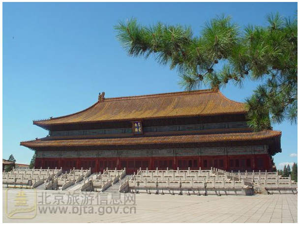
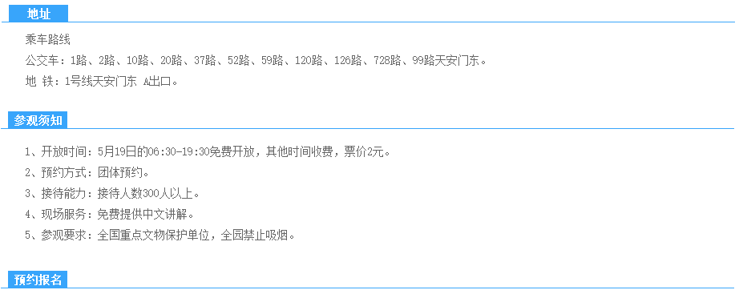
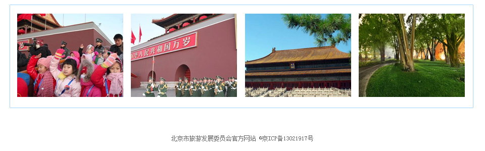

参观预约的开放单位列表>北京市劳动人民文化宫
北京市劳动人民文化宫

太子林
此处古柏独立成林，相传为明朝几代太子所植。太子年幼调皮，随意栽植，不循行距，随从亦不敢阻拦，任其所为，故而成林都与其他的柏林不同纵横 排列参差不齐，形成独特之景观。
太子林
“中国气象科技展厅”位于中国气象局气象科技大楼一层，展厅面积800平方米，分东西两厅；2006年3月23日中国气象科技展厅”位于中国气象局气象科
技大楼一层，展厅面积800平方米，分东西两厅；2006年3月23日

如果您有预约意向，请按预约按钮->
